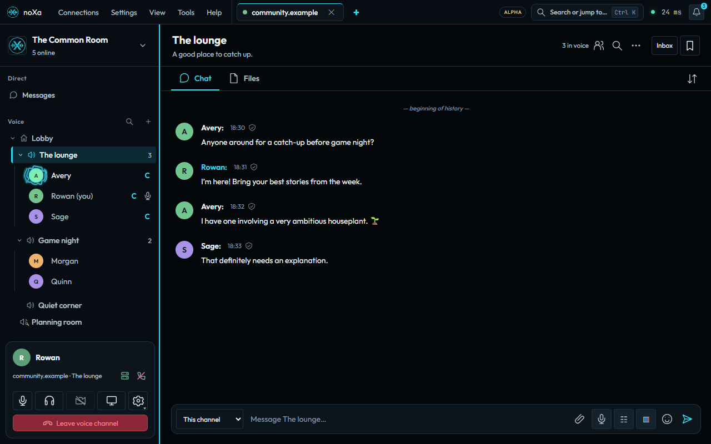

Using noXa · Public alpha
Chat, direct messages, and forums
Find conversations, organize chat tabs, use message tools, and follow persistent discussions.
Open and organize a conversation


Open a channel chat, direct message, or group conversation on the selected server. Access depends on your current membership and the channel’s permissions.
Chat tabs stay on one row. Open All chats to find tabs that do not fit. Right-click a tab to pin or reorder it, or drag within its pinned or unpinned section. Arrow keys move focus, Enter opens the focused chat, and Ctrl+Shift+Left or Ctrl+Shift+Right reorders it.
Recently closed in All chats, or Ctrl+Shift+T, reopens a conversation explicitly closed during this session. It retains up to ten entries and resets when the server or identity changes. Access is checked again when reopening.
Reply, react, and keep useful messages
Message tools include replies, emoji reactions, pins, polls, attachments, and voice messages. Availability depends on the conversation type, your permissions, and the server version. Moderation and rate limits can prevent an action even when you can read the conversation.
Current direct and private-group messages use Olm end-to-end encryption between devices. Updated clients do not fall back to legacy static-key messages: if a contact has no current encryption key, ask them to update. Older history can remain readable with a legacy-encryption label, but those legacy messages cannot be edited.
- Open the message’s available actions and choose the reply, reaction, or saving action you need.
- Use Save message to create a personal reference to a channel, direct, group, or thread message.
- Open Saved messages from the chat header to assign collections, filter, open a message, or remove its bookmark.
Saved messages are local to this device, identity, and server. They store references rather than copying message bodies. Deleted messages and revoked access can make a saved reference unavailable. Clearing local direct-message history can also make its older bookmarks unavailable.
Catch up with Inbox and Search history
The chat header provides Inbox, Search history, and Saved messages. These tools belong to the selected server; switching servers closes their dialogs and invalidates pending results.
Inbox brings together unread conversations, mentions, private groups, and followed threads. Opening the inbox does not itself mark a group or thread as read. Select an entry to open its context.
- Open Search history and choose text, sender, channel, date range, attachments, or a persistent thread as needed.
- Read the progress and error details. The first pass checks up to 2,000 messages; it is not necessarily the entire history.
- Choose Continue searching for the next batch, or Stop to prevent another history page from starting after the current request completes.
Message bodies are decrypted and matched in the native client. The server receives bounded history requests rather than your search text or a plaintext search index. Undecryptable messages and inaccessible sources are reported separately.
Start and follow a thread or forum post
- Open Threads and forum in a channel, or choose Start a thread on a channel message.
- Give the discussion a title and, when configured, tags. Add the post or reply.
- Join to follow updates by default. Unfollow to stop notifications without leaving, or leave to remove membership and following.
- Use active, archived, tag, and followed filters to find discussions. Reading a thread advances its read cursor.
A forum is a channel configured with Use this channel as a forum. It opens on a post board; Channel chat retains the earlier chat and composer. Authors and authorized moderators can archive or reopen discussions; archived threads remain readable and reject replies.
Guests can read permitted discussions but cannot join or change them. Posting requires the current channel history and send permissions. Moderators can pin posts; authors and authorized moderators can update titles and tags or mark questions resolved.